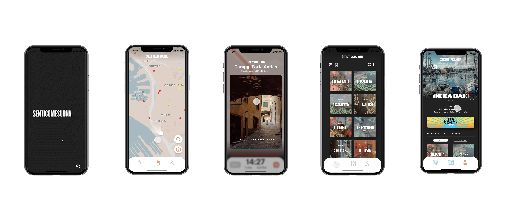
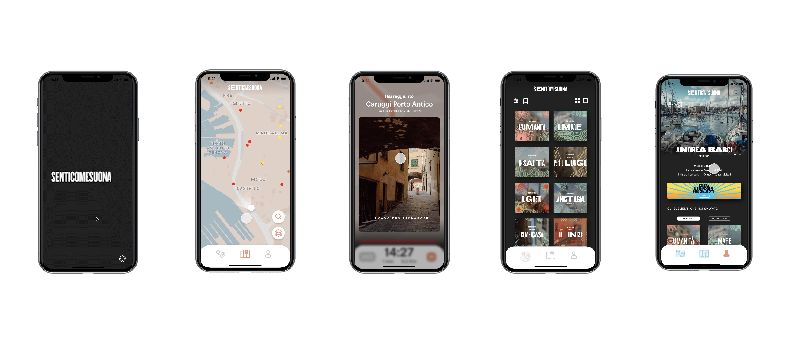
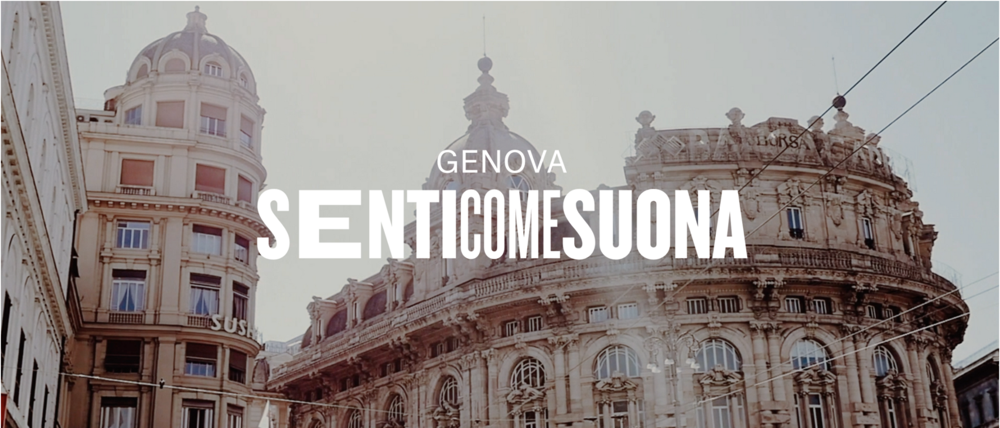
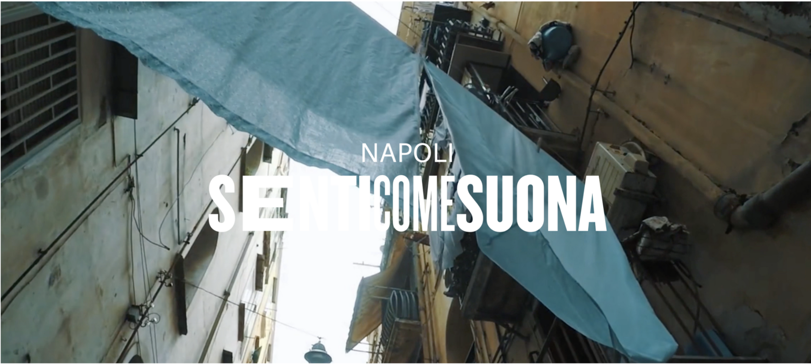
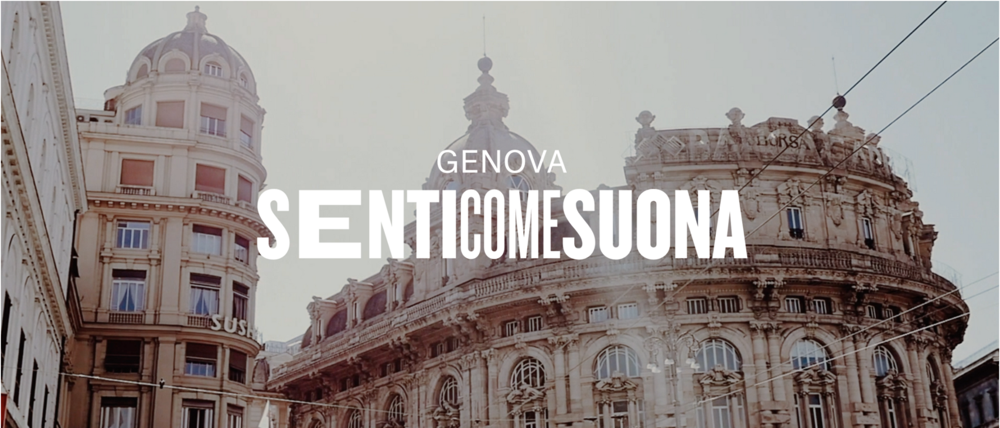
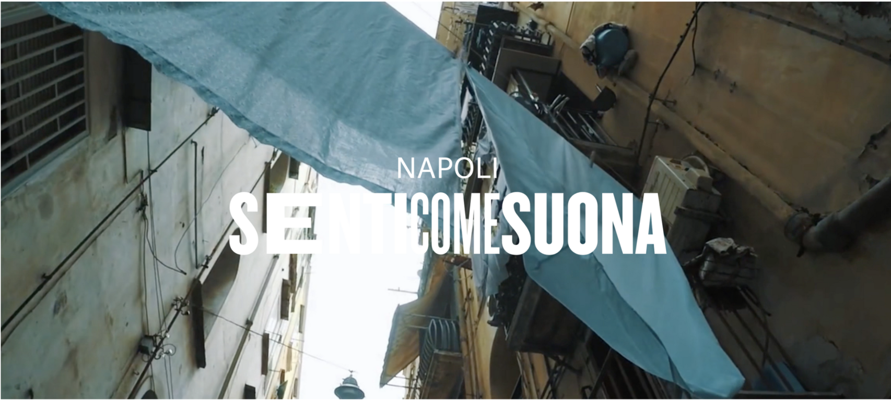

Interaction Design
Senticomesuona
- Area: Interaction
- Year: 2020

Interaction Design
 


 



Senticomesuona is an articulated communication system that allows you to experience the city of Genoa (but not only) through the sounds that have characterized and characterize it. What senticomesuona proposes is an experience, as complete as possible of the city, using different hybrid devices in order to make it more accessible to as many users as possible. This communicative system is a format that, born in genoa for all that has been said before, is adaptable to other places, while maintaining its own identity.
Team: Andrea Barci, Caterina Cedone, Francesca Fincato, Marta Monti, Marco Previdi
Project: Designing a system of complex artifacts that enhances the city of Genoa
Area: Interaction